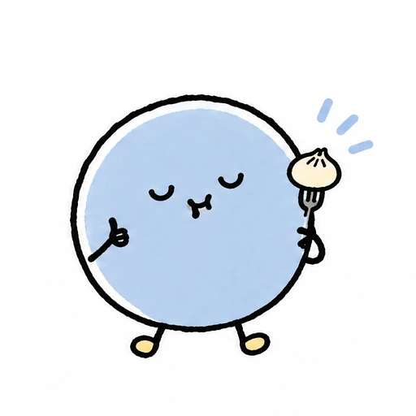

QR을 찍어요
앱 설치 없이 접속하고
편한 언어를 골라요.
 one shop ai
one shop ai
한국의 골목에서도, 베트남의 여행길에서도.
낯선 메뉴, 어려운 말 때문에 망설이지 않도록.
손님에게는 편한 대화를, 사장님에게는 든든한 도움을.
AI 에이전트 라미가 함께해요.
 Xin chào!Hello, Rami!こんにちは!
Xin chào!Hello, Rami!こんにちは!
말은 달라도,
반가운 마음은 같으니까요.
한 번의 QR 접속으로 시작하는, 우리 샵과 손님의 새로운 대화
손님이 궁금한 메뉴와 재료를 모국어로 물어보고, 라미의 안내를 받아 주문해요. 사장님은 한국어로 내용을 확인할 수 있어요.
아래는 준비된 문장으로 체험하는 통역 데모예요.
Món này có cay không? Tôi muốn món không cay.

Bạn có thể thử món gà sốt tương, không cay. Bạn muốn gọi một phần không?
맵지 않은 메뉴를 찾고 있어요.
간장 치킨 1인분을 안내했어요.
샵의 하루는 조금 더 여유롭게
손님의 첫 질문부터 주방의 준비 완료까지,
함께 일하는 사람들이 같은 내용을 보며 움직여요.
앱 설치 없이 접속하고
편한 언어를 골라요.

메뉴 추천도, 재료도.
궁금한 걸 편하게 말해요.
홀과 사장님은 주문을 확인하고
주방은 준비를 시작해요.

준비 완료 소식을 받고,
기분 좋은 한 끼를 시작해요.